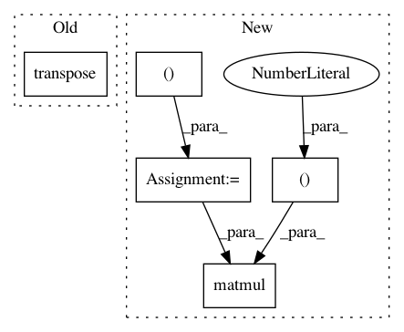

de0d3f7329c9c4f0204d87e76b6a956b0930ef3e,allennlp/modules/matrix_attention/bilinear_matrix_attention.py,BilinearMatrixAttention,forward,#BilinearMatrixAttention#Any#Any#,45
Before Change
@overrides
def forward(self, matrix_1: torch.Tensor, matrix_2: torch.Tensor) -> torch.Tensor:
intermediate = matrix_1.bmm(self._weight_matrix.unsqueeze(0))
return self._activation(intermediate.bmm(matrix_2.transpose(1, 2)) + self._bias)
After Change
def forward(self, matrix_1: torch.Tensor, matrix_2: torch.Tensor) -> torch.Tensor:
if self._use_input_biases:
bias1 = matrix_1.new_ones(matrix_1.size()[:-1] + (1,))
bias2 = matrix_2.new_ones(matrix_2.size()[:-1] + (1,))
matrix_1 = torch.cat([matrix_1, bias1], -1)
matrix_2 = torch.cat([matrix_2, bias2], -1)
intermediate = torch.matmul(matrix_1.unsqueeze(1), self._weight_matrix.unsqueeze(0))
final = torch.matmul(intermediate, matrix_2.unsqueeze(1).transpose(2, 3))
return self._activation(final.squeeze(1) + self._bias)
In pattern: SUPERPATTERN
Frequency: 3
Non-data size: 5
Instances
Project Name: allenai/allennlp
Commit Name: de0d3f7329c9c4f0204d87e76b6a956b0930ef3e
Time: 2018-07-20
Author: markn@allenai.org
File Name: allennlp/modules/matrix_attention/bilinear_matrix_attention.py
Class Name: BilinearMatrixAttention
Method Name: forward
Project Name: geomstats/geomstats
Commit Name: 506b234094009d55d326f1ce957f53f15d4b65ee
Time: 2018-02-26
Author: ninamio78@gmail.com
File Name: geomstats/spd_matrices_space.py
Class Name:
Method Name: group_log
Project Name: geomstats/geomstats
Commit Name: 506b234094009d55d326f1ce957f53f15d4b65ee
Time: 2018-02-26
Author: ninamio78@gmail.com
File Name: geomstats/spd_matrices_space.py
Class Name:
Method Name: group_exp